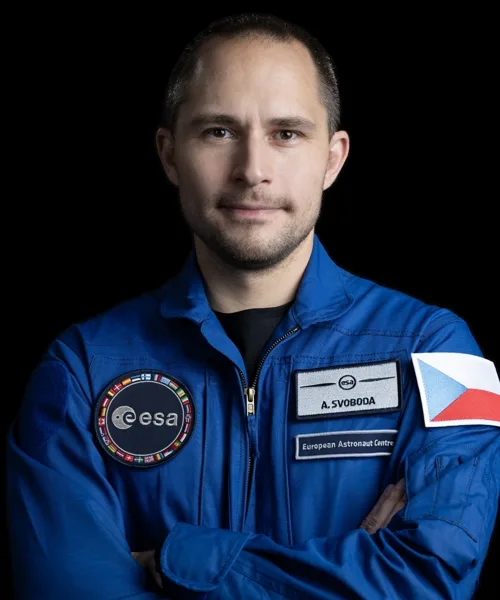
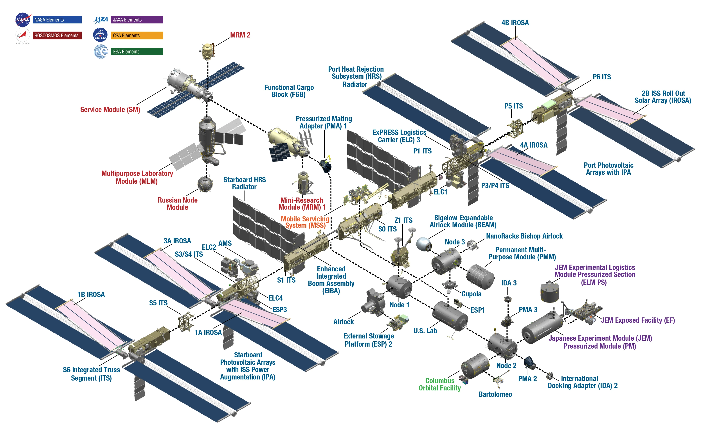
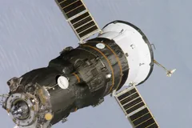
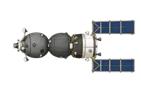
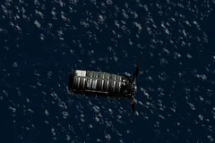
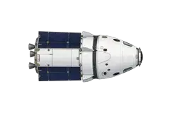

Počítám polohu…
posledních 24 hodinod otevřenídalší hodinazáběr Astro Pinoční strana Země
SAA: vliv vnitřního pásu
–km/h
–výška km
–souřadnice
–osvětlení
Natočení stanice
Odhad podle směru pohybu. ISS běžně letí v režimu, kdy je její spodní strana orientována k Zemi.
N
ISS➤
směr se počítá
SIMULACE ASTRO PI
načítám mozaiku NASA…
Přibližný pohled kamery pod ISS
– %mraky
– %pevnina
– %voda
Čekám na polohu ISS.
Model zobrazuje asi 400 × 400 km širokou oblast pod stanicí. Povrch a oblačnost pocházejí z poslední dokončené denní mozaiky NASA MODIS; nejde o živý obraz z ISS.
Posádka Expedice 75
Délka pobytu se dopočítává od příletu.

ČESKÁ MISE K ISS · PLÁN 2027
Aleš Svoboda: výcvik pro Vast PAM-1
Současná fáze: specifický výcvik pro konkrétní misi. Tříblokový základní program astronautské rezervy ESA dokončil na jaře 2026.
pilotování lodi Dragonstart na Falconu 9přiblížení a spojení s ISSnávrat na Zemi
Výcvik probíhá v blocích v Evropě a USA. Aleš má být pilotem mise vedené Thomasem Pesquetem; nominaci ještě musí schválit panel MCOP partnerů ISS.
Rychlost a výška
Průměrná minutová měření se uchovávají 30 dní.
Radiační prostředí a magnetické pole
Dipólový model Země
Nejde o živá palubní čidla. Radiační model zohledňuje geomagnetickou šířku a SAA a má orientační nejistotu přibližně ±50 %. Magnetické pole je zjednodušený dipólový odhad.
INTERAKTIVNÍ 3D MODEL
Mezinárodní vesmírná stanice
Tažením model otočíte, kolečkem nebo gestem přiblížíte.
Aktuálně připojené loděDragon Crew-12 · HarmonySojuz MS-29 · PričalCygnus XL · UnityProgress 95 · Zvezda3D model pochází z roku 2017 a neobsahuje Nauku ani Pričal.
Model: International Space Station: ISS, Studio Lab, Sketchfab
Kde jsou připojené lodě
Fotografie lodí ukazují příslušné moduly na aktuální konfiguraci ISS.


ZvezdaProgress 95
PričalSojuz MS-29
UnityCygnus XL
HarmonyDragon Crew-12Moduly a vnější části ISS
Aktualizované schéma NASA ve vysokém rozlišení. Kliknutím otevřete plnou velikost.
Americká a mezinárodní část
- Unity (Node 1)
- první spojovací uzel
- Destiny
- americká laboratoř
- Quest
- přechodová komora pro výstupy
- Harmony (Node 2)
- uzel laboratoří a Dragonu
- Columbus
- evropská laboratoř ESA
- Kibó
- japonská laboratoř JAXA
- Tranquility (Node 3)
- životní podpora a cvičení
- Cupola
- pozorovací modul se sedmi okny
- Leonardo (PMM)
- skladovací modul
- BEAM
- experimentální nafukovací modul
Ruská část
- Zarja
- funkční a nákladový blok
- Zvezda
- servisní a obytný modul
- Poisk
- výzkumný a dokovací modul
- Rassvet
- výzkumný a skladovací modul
- Nauka
- víceúčelová laboratoř
- Pričal
- uzlový dokovací modul
Vnější konstrukce
Nosníky S0–S6 a P1–P6, panely iROSA, radiátory, Canadarm2, Dextre, mobilní základna a venkovní experimentální plošiny.
Prostředí a životní podpora
Veřejné kanály NASA a orientační provozní hodnoty uvnitř ISS.
Čidlo v americkém laboratorním modulu Destiny.
Povolené rozmezí je 25–75 %. Historická měření jsou dostupná v NASA EDA.
Vypočteno z parciálního tlaku CO₂ v laboratoři.
Měřeno v americkém laboratorním modulu Destiny.
Podíl vypočtený z parciálního O₂ a tlaku kabiny.
Veřejná telemetrie systému WPA v modulu Node 3.
Nádrž moči– %
Odpadní voda– %
Procesor moči UPA–
Procesor vody WPA–
Hodnoty kromě relativní vlhkosti pocházejí z veřejné telemetrie NASA ISSLive. Poslední data: čekám na signál.
Připojené lodě
Crew-12 Dragon, Soyuz MS-29, Cygnus XL, Progress 95 a Progress 96.
Plánované přílety a odlety
Jessica Watkins, Luke Delaney, Joshua Kutryk a Sergey Teteryatnikov.
Náklad a nové sluneční panely iROSA.
Přibližně 5 tun zásob a experimentů.
Přílety a odlety za poslední 3 měsíce
Potvrzená spojení a odpojení od ISS od 14. 6. 2026.
Účel: zásobování Expedice 75.
Náklad: přibližně 3 tuny potravin, paliva a provozních zásob.
Účel: ukončení zásobovací mise a uvolnění portu Poisk.
Náklad při odletu: odpad určený k zániku v atmosféře; při příletu přivezl asi 3 tuny potravin, paliva a zásob.
Účel: návrat posádky Expedice 74 na Zemi.
Posádka: Chris Williams, Sergey Kud-Sverchkov a Sergei Mikaev; podrobný návratový náklad nebyl zveřejněn.
Účel: doprava tří členů Expedice 74/75 na přibližně osm měsíců.
Posádka: Anil Menon, Pyotr Dubrov a Anna Kikina; detailní nákladový manifest nebyl zveřejněn.
Účel: návrat časově citlivých experimentů a hardwaru na Zemi.
Náklad při příletu: asi 2 950 kg vědy, zásob a vybavení, včetně ODYSSEY, Green Bone, SPARK a přístroje STORIE.
ORBITÁLNÍ OPERACE
počítám dráhu…
Manévry, reboosty a vzestupné uzly
Zážeh 20 min 43 s zvýšil perigeum přibližně o 4,2 km a připravil dráhu pro Progress 96.
NASA ani Roskosmos zatím veřejně nepotvrdily datum dalšího reboostu.
Nejbližší průchody vzestupným uzlem
Načítám výpočet…
Vzestupný uzel je průchod rovníkem z jižní na severní polokouli. Časy a délky jsou dopočítané z predikované dráhy, nikoli operační plán NASA. · NASA: poslední reboost